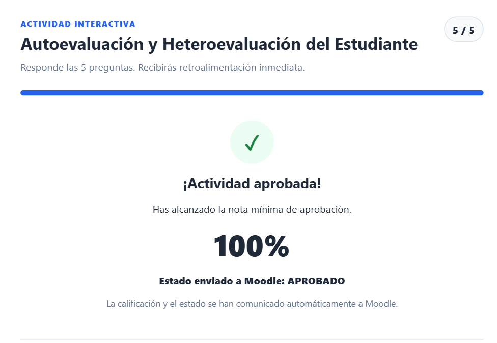

Evaluación del Aprendizaje
Modelar estrategias de autoevaluación, coevaluación dialógica y heteroevaluación mediante rúbricas analíticas estructuradas según la Taxonomía de Bloom para asegurar el alineamiento constructivo en el aula virtual.
Segundo Laboratorio y Evaluación Parcial: Evaluación Institucional, Gestión de Calidad Continua y Evaluación del Desempeño Docente en la Educación Superior Universitaria.
Estructura curricular completa y navegación secuencial de las evidencias de aprendizaje (Semanas 1 a 5)
Marco teórico-epistemológico y justificación de la evaluación formativa, institucional y del desempeño docente en entornos virtuales
La evaluación educativa en la educación superior virtual contemporánea trasciende el estrecho marco de la asignación numérica de notas o la fiscalización burocrática del rendimiento académico. En los Entornos Virtuales de Aprendizaje (EVA), evaluar constituye un proceso sistémico, dialógico y multiescalar de mediación formativa, autorregulación metacognitiva y aseguramiento integral de la calidad (Barberà, 2006; Black & Wiliam, 2009; Boud & Falchikov, 2007). No se limita al aula ni a las producciones de los estudiantes: abarca la eficacia de la gestión institucional, la pertinencia tecnológica de las plataformas y el desempeño pedagógico del cuerpo docente.
Este Portafolio Digital Integrador consolida la trayectoria académica del Segundo Laboratorio y Evaluación Parcial en la cátedra Evaluación Educativa en Entornos Virtuales de la Maestría en Docencia Universitaria en Entornos Virtuales (Universidad Dr. Andrés Bello, Regional Sonsonate). Su diseño articula de manera coherente y progresiva las cinco semanas lectivas del ciclo académico, organizadas en dos grandes períodos de desarrollo competencial:
Centrado en la evaluación de los aprendizajes del estudiante: autoevaluación como motor de autorregulación (Zimmerman, 2002); coevaluación entre pares orientada al juicio evaluativo («El Ciclo Crítico»); diseño de tareas ex aula auténticas graduadas según la Taxonomía de Bloom; y verificación conceptual automatizada al 100% en Moodle.
Enfocado en la evaluación institucional y del desempeño docente: modelos mixtos socioformativos para planes de mejora («Horizonte del Saber»); diagnóstico CIPP, análisis FODA y Marco Común de Evaluación CAF («Francesco Tonucci»); y evaluación docente 360° basada en las seis dimensiones de Fierro, triangulación evaluativa y ciclo PHVA.
De acuerdo con las directrices de la cátedra, cada elemento compilado se acompaña de su respectiva reflexión metacognitiva profunda, donde el maestrante analiza las competencias consolidadas, reconoce obstáculos metodológicos superados y establece comparaciones contextualizadas con las realidades del sistema de educación superior salvadoreño. Así, el portafolio se erige como una prueba fehaciente del tránsito de un rol pasivo a un perfil de docente-investigador crítico y transformador.
Alineación curricular con las competencias docentes y directivas de la Maestría en Entornos Virtuales
Diseñar, fundamentar y aplicar propuestas integrales de evaluación educativa en entornos virtuales —abarcando el aprendizaje estudiantil, el desempeño docente y la calidad institucional— mediante el uso de instrumentos rigurosos, enfoques de triangulación y planes de mejora continua basados en evidencias, para fortalecer la autorregulación pedagógica, la retención académica y la excelencia educativa en la educación superior universitaria.
Modelar estrategias de autoevaluación, coevaluación dialógica y heteroevaluación mediante rúbricas analíticas estructuradas según la Taxonomía de Bloom para asegurar el alineamiento constructivo en el aula virtual.
Diseñar modelos de evaluación institucional con enfoque socioformativo mixto, formulando dimensiones, indicadores verificables e instrumentos para auditar la mediación virtual, accesibilidad y permanencia estudiantil.
Aplicar el modelo CIPP de Stufflebeam, matrices FODA cruzadas y el Marco Común de Evaluación (CAF) para diagnosticar causas de deserción, formular planes de mejora viables y preparar a la institución para la acreditación externa.
Estructurar propuestas de evaluación docente 360° fundamentadas en las dimensiones de Fierro, triangulación de fuentes (auto, coe y hetero) y el ciclo PHVA para promover el desarrollo profesional continuo.
Ejercer una reflexión crítica sistemática sobre los logros, dificultades y decisiones pedagógicas adoptadas, contrastándolas con las problemáticas reales de la educación superior virtual en El Salvador.
Evaluación institucional, gestión estratégica de calidad y evaluación del desempeño docente virtual (Semanas 3, 4 y 5)
Diseño integral de una propuesta de evaluación de la calidad institucional para la Universidad «Horizonte del Saber». En el rol de Comisión Técnica, se estructuró una ficha de caracterización de la institución, se fundamentó un enfoque evaluativo mixto con base socioformativa, se diseñaron tres dimensiones con indicadores verificables, se elaboraron tres instrumentos listos para su aplicación (encuesta estudiantil de 15 afirmaciones, lista de cotejo de aulas virtuales y guía de entrevista semiestructurada), y se formuló un plan de mejora continua priorizado en 7 acciones estratégicas sustentado en el ciclo PHVA.
Problema Institucional Prioritario: Se identificó una vulnerabilidad crítica en la calidad del servicio educativo virtual y la coherencia pedagógica: barreras de acceso a la plataforma Moodle, participación irregular, desalineación entre objetivos y evaluaciones docentes, y carencia de un procedimiento sistemático para medir la efectividad tecnológica y recoger las opiniones de los actores.
Fundamentación del Enfoque Socioformativo-Sustantivo: Se articulan de forma no jerárquica el paradigma cuantitativo (métricas de acceso al LMS, tasas de entrega y permanencia) y el cualitativo (vivencias subjetivas de brechas de conectividad y razonamiento pedagógico docente), subordinados al eje socioformativo. Este enfoque posiciona a directivos, docentes, estudiantes y personal de soporte técnico como coevaluadores activos para transformar la realidad universitaria.
3 Instrumentos Diseñados: 1) Encuesta de Experiencia Estudiantil (15 ítems Likert + 3 preguntas abiertas cualitativas); 2) Lista de Cotejo de Aulas Virtuales (15 verificadores binarios sobre programa, fechas, recursos y evaluación); y 3) Guía de Entrevista Semiestructurada (8 preguntas reflexivas para docentes y coordinadores).
Plan de Mejora en 7 Acciones Prioritarias: 1) Inducción breve de bajo consumo de datos al aula virtual (Meses 1-2); 2) Estructura común estándar por asignatura en Moodle (Meses 1-3); 3) Talleres de diseño didáctico y revisión de rúbricas entre pares (Meses 2-4); 4) Protocolo de alertas tempranas y acompañamiento tutelar (Meses 2-4); 5) Mesa de ayuda con trazabilidad de incidencias técnicas (Meses 1-3); 6) Tablero de control de indicadores de efectividad tecnológica (Meses 2-4); y 7) Foros semestrales de rendición de cuentas y consulta comunitaria.
Ciclo PHVA: Se estructuran las fases de Planificar (línea de base), Hacer (ejecución piloto en asignaturas clave), Verificar (medición mensual de indicadores en tablero) y Actuar (institucionalización de medidas eficaces y reajuste de apoyos).
Estudio de caso y propuesta de intervención institucional para la Universidad Franceso Tonucci. En el rol de Comité de Evaluación Institucional, se abordaron problemáticas estructurales: deserción del 35%, lentitud en la retroalimentación docente, fallas técnicas en la plataforma y desconexión con el mercado laboral. La intervención articula el modelo CIPP de Stufflebeam (Contexto, Insumo, Proceso, Producto), una matriz FODA con estrategias cruzadas (FO, DO, FA, DA), un proceso de autoevaluación participativa bajo el Marco Común de Evaluación (CAF) y un Plan de Mejora Institucional viable con gobernanza democrática.
Componentes CAF: Involucra a Directivos, Docentes y Estudiantes; recoge evidencias de analíticas de Moodle y encuestas; evalúa Liderazgo en Personas y Resultados en Clientes; alcanza acuerdos mediante Taller Delphi; y hace seguimiento con el Comité Permanente de Calidad y Tablero de Control Digital.
Plan de Mejora Priorizado: 1) Sistema Integral de Acompañamiento Tutelar y Alertas Tempranas (SIAT, Meta: deserción ≤ 15% en 6 meses); 2) Programa de Certificación en Tecno-Pedagogía y Retroalimentación Efectiva (Meta: 100% docentes certificados, respuesta ≤ 48 hrs en 3 meses); 3) Optimización de infraestructura en la nube del LMS (Meta: Uptime ≥ 99.5% en 6 meses); y 4) Rediseño curricular basado en retos y casos prácticos por competencias (Meta: 100% planes adaptados en 4 meses).
Propuesta integral de evaluación del desempeño docente para la Universidad Franceso Tonucci. A partir del estudio de caso, se analizaron las seis dimensiones de la práctica educativa según Fierro, Fortoul y Rosas (1999), se seleccionaron y fundamentaron factores clave del desempeño, se diseñó un proceso de triangulación evaluativa (autoevaluación mediante autoinforme, coevaluación entre pares con observación de aulas y heteroevaluación estudiantil y directiva), se construyó una rúbrica analítica por niveles de desempeño en 4 dimensiones centrales (Responsabilidad, Didáctica, Evaluación y Promoción del Aprendizaje) y se formuló un plan de mejora docente orientado por el ciclo PHVA.
Factores Clave Priorizados: 1) Métodos de planeación y estrategias didácticas; 2) Métodos y técnicas para la enseñanza participativa; y 3) Procesos de evaluación en el aula y retroalimentación formativa (fundamentados en Gálvez & Milla, Martínez-Chairez y Peñafiel Arévalo).
| Modalidad | Participante | Aspectos Evaluados e Indicadores | Instrumento | Procedimiento |
|---|---|---|---|---|
| Autoevaluación | El propio docente | Reflexión sobre gestión de tiempos en Moodle, dominio tecno-pedagógico y autodiagnóstico. | Autoinforme estructurado de práctica reflexiva | Diligenciado al cierre del módulo con evidencias y plan de autoformación. |
| Coevaluación | Pares académicos | Pertinencia de metodologías activas y coherencia instruccional del aula virtual. | Rúbrica de observación entre pares | Observación cruzada de dos sesiones sincrónicas y auditoría de Moodle. |
| Heteroevaluación | Estudiantes y Autoridades | Acompañamiento, claridad pedagógica, respeto y cumplimiento de plazos normativos. | Encuesta estudiantil y Lista de cotejo directiva | Encuesta anónima al finalizar el curso y monitoreo continuo de plataformas. |
Riesgos de evaluar solo mediante satisfacción estudiantil: Puede confundirse la empatía personal o la facilidad para aprobar con la calidad académica, desestimando la rigurosidad científica y el diseño curricular. La triangulación neutraliza los sesgos y asegura un diagnóstico integral.
4 Dimensiones Centrales con Escala 1 a 4 (Excelente 4, Satisfactorio 3, En proceso 2, Necesita mejorar 1):
Ciclo PHVA para Competencias Digitales: Planificar (diseño del programa de TIC con meta de 100% docentes formados en 3 meses); Hacer (talleres prácticos de H5P y foros avanzados); Verificar (listas de cotejo en Moodle y encuestas); y Actuar (institucionalizar talleres o asignar tutorías individualizadas de refuerzo).
Evaluación formativa en el aula virtual: análisis de casos, coevaluación y diseño evaluativo auténtico (Semanas 1 y 2)
Resolución académica y metodológica de dos escenarios pedagógicos reales: Caso 1: Autoevaluación en un curso virtual de posgrado y Caso 2: Heteroevaluación de una actividad colaborativa virtual. La actividad implicó asumir el rol de docente responsable, fundamentar los conceptos evaluativos, diseñar dos rúbricas analíticas estandarizadas, interpretar resultados cuantitativos y cualitativos, y formular planes docentes de toma de decisiones pedagógicas.
Problema abordado: En una maestría virtual, los estudiantes entregan propuestas técnicamente correctas en Moodle pero muestran dificultades para identificar sus debilidades y fortalezas. El docente incorpora una autoevaluación reflexiva previa a la calificación definitiva.
Interpretación de la simulación: Un estudiante obtiene Objetivos: 4/4, Coherencia: 3/4, Actividades: 4/4, Recursos: 3/4 y Evaluación: 2/4 (Total: 16/20 pts = 80% o 8.0/10). El análisis revela una brecha crítica en el componente evaluativo: el estudiante diseña qué enseñar y qué actividades hacer, pero carece de competencias para construir instrumentos válidos de verificación (fisura en el alineamiento constructivo de Biggs).
Toma de decisiones: La autoevaluación no se utiliza de forma punitiva. Se implementan dos acciones de mejora: 1) Taller de alineamiento constructivo con matriz de trazabilidad en Moodle; y 2) Laboratorio de diseño y calibración de rúbricas analíticas.
Problema abordado: Tres equipos presentan propuestas dispares en un aula virtual: Equipo A (excelente teoría, poca aplicación práctica); Equipo B (práctico y creativo, poca coherencia objetivos-actividades); y Equipo C (propuesta equilibrada).
Puntuaciones fundamentadas: Equipo A: 15/20 (7.5); Equipo B: 15/20 (7.5); Equipo C: 17/20 (8.5). Aunque el Equipo A y B obtienen la misma nota numérica, sus perfiles formativos son radicalmente opuestos: uno requiere traducir la teoría a instrumentos y el otro alinear sus actividades a las metas curriculares.
Intervención docente: Se establecen 4 acciones pedagógicas: Taller de alineamiento (Equipo B), Laboratorio de instrumentos (Equipo A), Pilotaje con grupo focal (Equipo C) y Segunda entrega acompañada de una matriz de cambios fundamentados.
Actividad colaborativa en equipos sobre la coevaluación en entornos virtuales. Como integrantes del Equipo 4: Cierre del ciclo y transformación, resolvimos el dilema de cómo diseñar el cierre de una actividad virtual para que los estudiantes demuestren tangiblemente que han utilizado la retroalimentación de sus pares para mejorar su producto final o comprensión del tema.
«Desde mi perspectiva, el cierre ideal sería solicitar la entrega del producto final acompañado de un breve video, audio o microcápsula interactiva de reflexión (de 1 a 2 minutos). En esta presentación, el estudiante debe contrastar brevemente la versión original de su trabajo, mencionar los aportes más valiosos que recibió durante la coevaluación de sus pares, y argumentar con evidencias cómo esos comentarios transformaron y mejoraron la versión definitiva. De esta manera, no solo se evalúa el producto tangible modificado, sino también la capacidad del estudiante para interiorizar la crítica constructiva, fomentando una verdadera metacognición y apropiación de su proceso de aprendizaje».
Diseño didáctico completo de una estrategia de evaluación universitaria en modalidad 100% virtual para la cátedra Formulación y Evaluación de Proyectos de Innovación Tecnológica. La propuesta responde exhaustivamente a las seis preguntas epistemológicas, adopta la modalidad de Tarea Ex Aula con Andamiaje y Entregas Progresivas, alinea los criterios con los niveles superiores de la Taxonomía de Bloom (Analizar, Evaluar, Crear) e incluye una Rúbrica Analítica Digital completa graduada en 4 niveles de desempeño (Puntaje Total: 10.0 / 100%).
Consigna: Los estudiantes seleccionan una micro o pequeña empresa real de su localidad, investigan su cadena de valor, identifican una oportunidad de mejora digital (comercial, logística o administrativa) y diseñan una propuesta viable con objetivos SMART, análisis FODA, cronograma de hitos y presupuesto justificado. Se entrega un informe digital estructurado (máximo 12 páginas, APA 7) y un video de sustentación de 3 minutos.
| Criterio y Ponderación | Excelente (100%) | Bueno (75%) | Aceptable (50%) | Insuficiente (25%) |
|---|---|---|---|---|
| 1. Diagnóstico FODA (20% - 2.0 pts) | Diagnóstico preciso y contextualizado; analiza a profundidad las 4 dimensiones tecnológicas. | Identifica los cuatro cuadrantes con buen análisis, aunque omite detalles técnicos menores. | FODA general o superficial con poca fundamentación en la realidad del negocio. | Diagnóstico descontextualizado o confuso; omite factores críticos. |
| 2. Público Objetivo (10% - 1.0 pto) | Segmentación exhaustiva con variables demográficas, conductuales y digitales claras. | Define el público de forma adecuada, con leve falta de precisión psicográfica. | Descripción genérica de clientes sin especificar hábitos de consumo digital. | No define el público o la segmentación es incongruente con el negocio. |
| 3. Objetivos SMART (10% - 1.0 pto) | Objetivos específicos, medibles, alcanzables, realistas y temporales alineados al FODA. | Objetivos pertinentes pero con debilidad en sus metas métricas de medición. | Confunde objetivos de aprendizaje o metas empresariales con simples tareas. | Objetivos ausentes, confusos o contradictorios con el diagnóstico. |
| 4. Estrategias Digitales (25% - 2.5 pts) | Soluciones tecnológicas innovadoras, realistas y viables a la escala de la MYPE. | Propuestas pertinentes y viables con desarrollo técnico moderado. | Propuestas genéricas o con alto riesgo de inviabilidad financiera. | Estrategias inviables o desvinculadas de la problemática diagnosticada. |
| 5. Plan y Presupuesto (20% - 2.0 pts) | Cronograma de hitos detallado, responsables claros e inversión cotizada con rigor. | Plan coherente y presupuesto aproximado; requiere afinar plazos específicos. | Cronograma vago o presupuesto desfasado de los costos de mercado. | Planificación inexistente; no define responsables ni costos. |
| 6. Presentación y APA (15% - 1.5 pts) | Estructura impecable, redacción académica, video elocuente y citas APA 7 exactas. | Buena redacción y sustentación clara con detalles menores de formato. | Dificultades notorias de estructura, redacción confusa o citas incompletas. | Desorganizado, sin sustento de fuentes o plagio detectado. |
Capturas de pantalla originales que acreditan la aprobación con la nota máxima (100% - 5/5 respuestas correctas) en las actividades interactivas formativas desarrolladas en la plataforma Moodle durante las semanas 1 y 2 del curso.


Metodología de curaduría crítica, triangulación y aseguramiento de la calidad de evidencias (Semanas 1 a 5)
Compilación sistemática y continua de artefactos de aprendizaje producidos a lo largo de los dos períodos académicos del curso (Semanas 1 a 5). Se acopiaron documentos de trabajo individual, memorias de diseño colaborativo en equipos interdisciplinarios, resoluciones de casos pedagógicos, registros de retroalimentación automatizada en Moodle (100% de aprobación) y modelos integrales de gestión institucional y docente.
Criterio de acopio: Asegurar la trazabilidad evolutiva del maestrante desde la micro-evaluación en el aula virtual hasta la macro-evaluación institucional de la calidad universitaria.
La selección evitó el almacenamiento indiscriminado de tareas, rigiéndose por criterios de representatividad, rigor metodológico y pertinencia curricular. Se priorizaron 7 producciones estelares que demuestran competencias profesionales consolidadas: 3 instrumentos listos con plan PHVA (Semana 3), triangulación CIPP-FODA-CAF con matriz de 5 prioridades (Semana 4), y rúbrica docente en 4 dimensiones de Fierro con plan de mejora (Semana 5).
Criterio de filtro: Cada evidencia seleccionada aporta valor tangible al perfil de egreso en docencia universitaria virtual y responde a una necesidad formativa explícita.
Cada elemento seleccionado fue sometido a una triple verificación: contrastación con la literatura científica internacional (Fierro, Stufflebeam, EIPA, Biggs, Tobón), valoración crítica del propio crecimiento docente (dificultades superadas y competencias adquiridas) y establecimiento de paralelismos directos con situaciones reales y análogas del sistema de educación superior en El Salvador.
Este proceso garantiza que el portafolio no sea un catálogo estático de tareas pasadas, sino un dispositivo dinámico de investigación-acción pedagógica y proyección profesional.
Metacognición integradora del posgrado y plan de transferencia docente universitaria
La culminación de este portafolio digital representa una metamorfosis integral en mi concepción pedagógica. Inicié el curso analizando la micro-evaluación en el aula virtual —comprendiendo cómo calibrar rúbricas analíticas, cómo cerrar el ciclo de la coevaluación y cómo utilizar la retroalimentación formativa para autorregular el aprendizaje—. Concluimos el trayecto abordando la macro-evaluación: la calidad institucional y la evaluación docente en entornos virtuales mediante modelos internacionales como CIPP, FODA-Estratégico, CAF y las seis dimensiones de Fierro, Fortoul y Rosas.
He consolidado una convicción ética inapelable: la evaluación en entornos virtuales no existe para auditar ni sancionar, sino para dignificar, orientar y transformar. Cuando una universidad concibe la evaluación institucional como una cultura participativa (PHVA) y no como un trámite burocrático de acreditación, y cuando evalúa a su profesorado triangulando fuentes con respeto y acompañamiento técnico, la calidad deja de ser un eslogan publicitario y se convierte en una vivencia formativa palpable para cada estudiante.
Como futuro Maestro en Docencia Universitaria en Entornos Virtuales egresado de la Universidad Dr. Andrés Bello, asumo la responsabilidad ética de trasladar estos principios a las facultades y carreras universitarias salvadoreñas, liderando el tránsito de la calificación tradicional punitiva hacia la evaluación auténtica y transformadora.
Actualizar el 100% de los entornos virtuales de aprendizaje en mis asignaturas universitarias incorporando rúbricas analíticas digitales en Moodle, compartidas transparentemente desde el inicio de cada ciclo académico junto con guías de retroalimentación formativa oportuna.
Implementar en mi unidad académica programas de coevaluación con protocolos de retroalimentación constructiva basados en la Escalera de Perkins, además de promover pilotos de autoevaluación y coevaluación docente entre pares para fortalecer las comunidades de práctica virtual.
Liderar comisiones técnicas de autoevaluación y acreditación institucional en universidades salvadoreñas, aplicando el modelo CAF y el ciclo PHVA para diseñar planes de mejora continua que cierren las brechas digitales y pedagógicas de la educación superior a nivel nacional.
Aplicación formal y valoración rigurosa de la Rúbrica Oficial de Calificación del Segundo Laboratorio y Parcial (10.0 Puntos)
| Criterio Oficial de Evaluación | Ponderación Máxima | Nivel Alcanzado | Justificación Analítica de Desempeño y Evidencias | Puntuación Asignada |
|---|---|---|---|---|
| 1. Portada, Título, Índice, Introducción y Objetivo | 2.0 pts | Excelente (2.0) | Presenta una portada institucional completa con título representativo e inspirador, metadatos académicos de maestría, fecha y sede (Sonsonate, Noviembre 2026). El índice general enlaza dinámicamente todas las secciones y las 7 evidencias de ambos períodos. La introducción profundiza gradualmente en el propósito del portafolio y la transición paradigmática hacia la evaluación formativa e institucional. Los objetivos (general y 5 específicos) se encuentran rigurosamente alineados al perfil de egreso en docencia universitaria virtual. | 2.0 / 2.0 |
| 2. Elementos Semana 3: Evaluación institucional y plan de mejora continua | 2.0 pts | Excelente (2.0) | Incluye la caracterización fundamentada de la Universidad «Horizonte del Saber» y la justificación teórica del enfoque evaluativo mixto socioformativo. Diseña 3 dimensiones (Pedagógica, Gestión y Tecnológica) con criterios e indicadores verificables. Incorpora 3 instrumentos listos para su aplicación (encuesta Likert de 15 ítems, lista de cotejo de aulas virtuales y guía de entrevista semiestructurada). Presenta el diagnóstico analítico de hallazgos y formula un plan de mejora continua viable priorizado en 7 acciones bajo el ciclo PHVA. | 2.0 / 2.0 |
| 3. Elementos Semana 4: Evaluación educativa y mejora del desempeño institucional | 2.0 pts | Excelente (2.0) | Aplica con absoluta precisión el Modelo CIPP de Stufflebeam a las 4 dimensiones de la Universidad Tonucci (Contexto, Entrada, Proceso, Producto). Identifica la matriz FODA y formula 8 estrategias cruzadas (FO, DO, FA, DA). Demuestra dominio integral del Marco Común de Autoevaluación (CAF) mediante consulta Delphi, comité paritario y cuadro de mando. Estructura un plan de mejora institucional con 5 factores de alta viabilidad y profundidad técnica con indicadores cuantitativos. | 2.0 / 2.0 |
| 4. Elementos Semana 5: Evaluación del desempeño docente | 2.0 pts | Excelente (2.0) | Analiza exhaustivamente las seis dimensiones de la práctica docente de Fierro, Fortoul y Rosas (1999) y prioriza los 3 factores clave para la virtualidad. Diseña una propuesta auténtica y triangulada de evaluación profesoral (autoevaluación reflexiva 25%, coevaluación colegiada entre pares 35% y heteroevaluación estudiantil informada 40%). Diseña un instrumento analítico completo en 4 dimensiones observables con escala 1 a 4. Articula un plan de mejora docente integral sustentado en el ciclo PHVA con seguimiento trimestral. | 2.0 / 2.0 |
| 5. Reflexiones (por cada elemento) | 2.0 pts | Excelente (2.0) | Presenta reflexiones metacognitivas individuales, profundas y argumentadas en cada una de las evidencias (E1 a E7). Analiza críticamente los logros obtenidos, las dificultades metodológicas enfrentadas, las competencias docentes desarrolladas y establece comparaciones explícitas y rigurosas con situaciones análogas y problemáticas reales del sistema de educación superior en El Salvador, cumpliendo al 100% con el estándar de máximo rigor académico. | 2.0 / 2.0 |
Fuentes teóricas, normativas e investigaciones pedagógicas en formato APA 7.ª edición